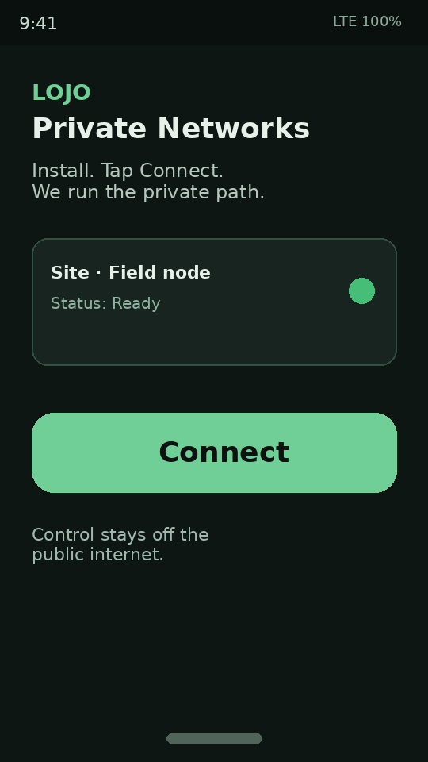

Oil & gas
Contractor access without opening the plant network.
Give crews a safe way in for site systems — control stays off the public internet.
Private path · WAN / satellite · private AI · analytics
You get a managed private path for wide-area and satellite-connected systems, field IoT, remote sensing, oil & gas, and businesses — install an app, tap Connect, and we operate the network.
Private AI and private cloud analytics on your path when you want them — not a public chatbot.



Who it’s for
Contractor access without opening the plant network.
Give crews a safe way in for site systems — control stays off the public internet.

Gateways stay private.
Controllers and edge boxes join a named private network. IoT and controls reach you after Connect — cameras keep using their own apps.

Sensors reachable without public ports.
Field gear on messy last‑mile — cell, Wi‑Fi, or Starlink — we operate the path so sites stay reachable without a public exposure.

Remote livestock sites you can actually run.
Monitoring, remote open/close, and site view on a private path — a cattle-trap field example in New Mexico.
Field stats: 600+ cattle · 150+ wild horses handled.
Secure plant networks without opening OT/IT to the public internet.
Contractors and sites reach design systems, plant controls, and site gear over a managed private path — same approach on cell or Starlink.
Also for: construction & temporary sites · mining / quarry · water & irrigation · trucking & yards · campuses · disaster / remote camps
Capability proof · wild country
One field example: remote trap sites operators can monitor and control from a phone over cell or Starlink — without putting control on the open internet. Same private-path pattern for businesses, oil & gas, and field IoT.
IoT and controls reach you after Connect — cameras keep using their own apps. Managed path today, or Build when you want it in your own environment.

Deployment · two modes
Same product idea either way — a private control path. Two ways to run it.
Managed today
You Connect your sites. We operate the managed private path so people, IoT, and controls reach each other without putting control on the open internet.
Your environment via Build
When you want the system inside your own cloud or on your premises, we scope and deliver that under a Build engagement — design, deploy, hand off, or keep running.
Managed path today; when you need systems inside your own cloud or on-site, that’s a Build engagement.
What you get
How it works
Tell us your sites and what people, IoT, or sensors need to reach.
Connect, Operate, or Build — we scope sites and stand up the path.
Your team installs a simple app and taps Connect.
You work. We operate the private path.

Also offered · remote livestock
Need remote trap control, monitoring, and a private path built and run for you? We deliver that under Build — same private-path pattern as the rest of LOJO, sized for ranch and remote livestock sites. Field-proven pattern: 600+ cattle and 150+ wild horses handled.
Plans
Three ways to buy LOJO — private path, operated edge, or systems we design and run. Cameras keep using their own apps. Optional private AI is an add-on, not a buried substitute for plans.
| Plan | What | Price |
|---|---|---|
| Connect | Managed private path for sites that can’t put control on the open internet | from $150/site/mo |
| Operate | Connect + we watch edge gear, remote sensing, uptime; browser control after Connect. Cameras keep using their own apps. Optional private AI add-on when you want it. | from $400/site/mo |
| Build | Systems-as-a-service — cattle-trap and similar remote systems; place the system in your cloud or on-site when you want it there; we design/deploy/hand off or keep running | scoped quote (typical pilot build from ~$5k) |
Write team@lojo.engineering — which plan, sites, and when you want to start.
Pick a plan. Review how it deploys. Write team@lojo.engineering — which plan, sites, and when you want to start.
Talk LOJO plans